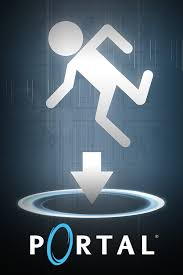
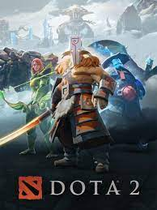

Counter Strike


Portal é uma série de jogos eletrônicos de primeira pessoa, com puzzles em plataforma desenvolvida por Valve Corporation. Situado no universo de Half-Life, os dois jogos da série, Portal (2007) e Portal 2 (2011), tem como foco uma mulher, Chell, forçada a fazer uma série de testes dentro da Aperture Science Enrichment Center supervisionados pelo computador com inteligência artificial GLaDOS, que controla as instalações.

Dota 2 é um jogo eletrônico gratuito do gênero batalha multijogador, desenvolvido pela produtora Valve Corporation como sequência do Defense of the Ancients, [ lançado em julho de 2013 na plataforma Steam.